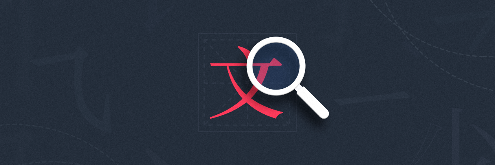
MakicLin
09月19日
第三章：如何区分中文字体
| 本文为付费栏目文章，您已订阅，可阅读全文 |
欢迎回来
上一章，我们讲了如何辨识英文字体，为了不让篇幅过长，我们在这一章接着讲「如何辨识中文字体」。在掌握了英文字体的辨识技巧之后，掌握中文字体辨识技巧会简单许多，但两者在发展和设计方式上仍有区别。英文的每句话由单词组成，单词由二十六种字母组成；而中文则是方块字，每个字由笔画组成，光是「勾」这一种笔画就有多达十一种勾。
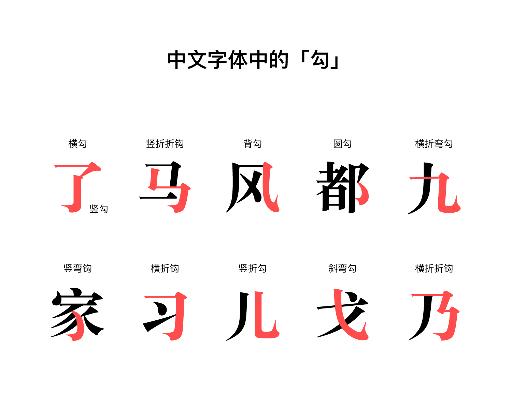
我们对待中文字体的时候，需要洞察的辨识特征稍有不同，但仍有许多共通之处。
中文字体的辨识特征
1. 衬线
对于中文字体，我们仍然可以将其分为「衬线字体」和「非衬线字体」两种。书法中的「顿笔」，印刷字体上的「三角」都可以算作衬线。衬线字体显得比较古典，有韵味，同时也会显得死板，因为很多公文都在用衬线体。非衬线体在电子显示媒介上应用广泛，传播信息更加清晰，同时也少了一点点书法之美。
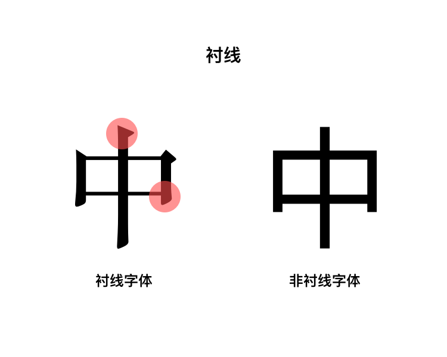
与英文字体相同，衬线字体的衬线也各式各样，对比衬线形态是区分字体的好办法。我们常见的宋体与楷体属于衬线体，而黑体则属于非衬线体。虽然楷体与宋体都可以认为是衬线体，但楷体更加偏向于模拟毛笔书写，而宋体则更加锋利平整，适合打印。
2. 内白（字怀）
与英文字体一样，中文字体笔画之间的空间都可以称之为字怀或内白。与英文字体不同的是，中文笔画少的字天生内白较大，笔画多的字自然内白较小，而英文字母相对平均一些。
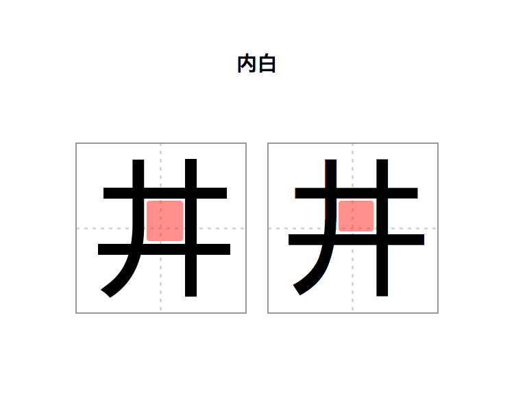
3. 重心
字的视觉重心。一套字体的重心几乎保持一致，不同字体的重心略有不同。
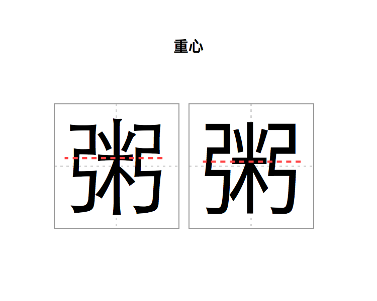
4. 小细节
(1) 喇叭口
喇叭口是笔画末端变宽的部分，有些字体有喇叭口，有些则没有。
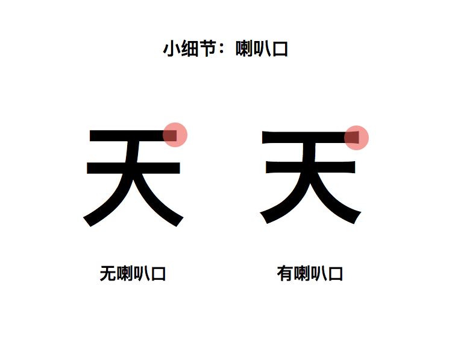
喇叭口的用途有很多：最初是由于铅字印刷时中间区域着色较多，导致笔画开始和结束的地方相对圆润，于是在笔画两端加粗，视觉上与中间区域一致，就有了喇叭口。但如今的屏幕清晰度已经可以精确的显示字体，喇叭口的意义已经由「为媒介优化」变为「审美选项」，比如「让字体更有力道和韵味」。整体来说带喇叭口的字体出现频率越来越低了。
在这里不得不提到在英文字体中类似的例子—— Bell Centennial。Bell Centennial 是在 1978 年发布，专门为当时 AT&T（美国电信运营商） 出版的电话簿设计的字体。由于需要承载大量信息的同时还要控制成本，电话簿会使用非常薄且劣质的纸以及非常小号的字体。
为了解决笔画交汇处的墨水扩散问题，设计师 Matthew Carter 在笔画交汇的地方挖空一些，这样墨水扩散后就能自动填满，视觉上才算正常。Bell Centennial 与喇叭口的设计都是为了媒介而做的优化，同样也因媒介的迭代而慢慢淘汰。
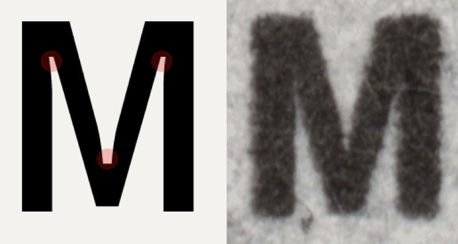
Bell Centennial 实际字体（左）与打印在电话簿上的效果（右）
(2) 折
「折」笔画是分辨字体的好办法。不同字体「折」的角度、顿笔（衬线）的形状、笔画结束形态都可能有所不同。下图可以看出，华文宋体的折在结束的时候有一种笔离开纸面的感觉。思源宋体的折则更加刻意一些，感觉是用了一些力再离开纸面，比较丰满。
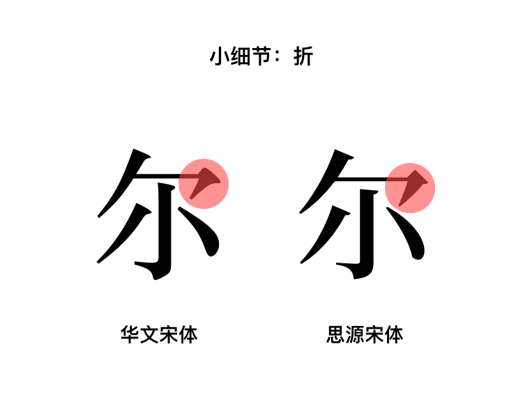
(3) 点
记得小学写「心」字的时候，这三个点儿一直点不对地方。「点点儿」在中文字体中可比想象中要复杂，点的弧度、长度、位置都可能让字体有这不同的气质，况且很多字不只有一个点，更是彰显字体特征的重要细节。我们可以通过对比「点」这个简单笔画分辨字体。下面这对「三点水」的例子可以看出：苹方的「点」是带有弧度的，旗黑的「点」几乎是直的。
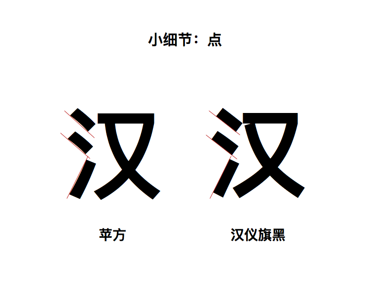
下面这张图说明了「点」这样一个简单的笔画可以带来怎样的不同：
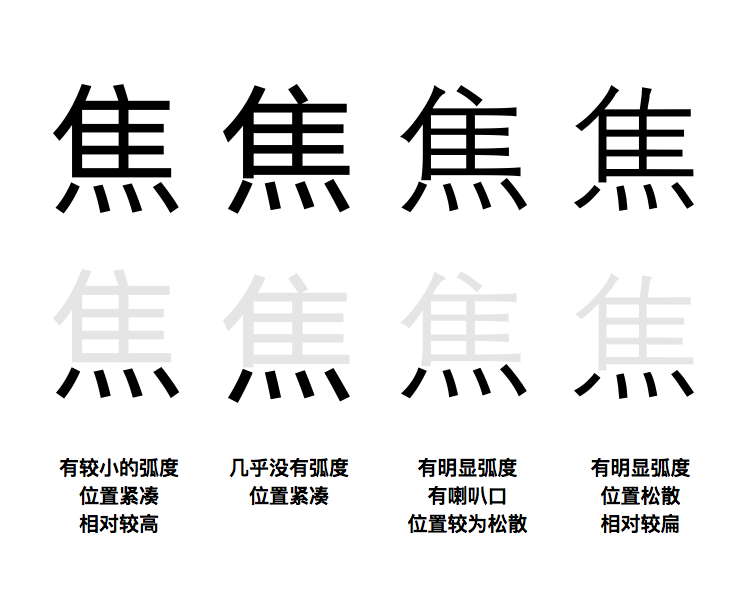
四种字体「点」的对比以及特征
要知道，以上这些不是全部中文字体特征，只是足够让我们快速地辨识和区分字体。
实际应用的案例
学了这么多字体分辨的知识，做了这么多中英文字体区分的练习，你可能会疑问学这些是为什么？我们的答案就是「为了下一章有关如何选择字体打基础」。实际上你已经开始明白「为何选择某个字体」的原因了，下面我们来看一个实例：
锤子科技发布会的字体选择
锤子科技的发布会幻灯片一度是国内科技行业发布会的标杆，当然，他们的幻灯片设计也在不停地进行演变，最大的一次变化是字体上的变化。下面是锤子科技第一场发布会和 2018 年的夏季新品发布会的字体对比图：
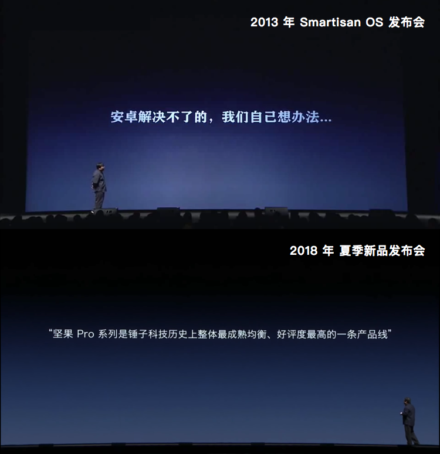
学会区分中文字体的你一定一眼就能看出来，2013 年发布会幻灯片中使用了一个较粗的衬线字体，而 2018 年幻灯片中已经改为了一个较细的非衬线字体。虽然锤子科技官方没有解释过，但是我从应用的角度出发，思考为什么会发生这样的改变？
我们可以先看一下幻灯片的放映环境。从图片中可以看出，2018 年的幻灯片放映尺寸要比 2013 年的大和宽很多，相应也就意味着人数和场地也相对较大。我们知道对于内白较小的字体，如果观看距离比较远，字体的中心可能会糊在一起，而较细的非衬线字体可以保证在远距离观看时字不会糊在一起。这可能是字体变化的原因之一。
再看一下发布会的内容，在 2013 年的发布会发布的只是手机系统，而后的发布会都会有手机发布。手机和操作系统的区别在于，发布手机时需要一页幻灯片将所有的参数和卖点列出来，像这样：
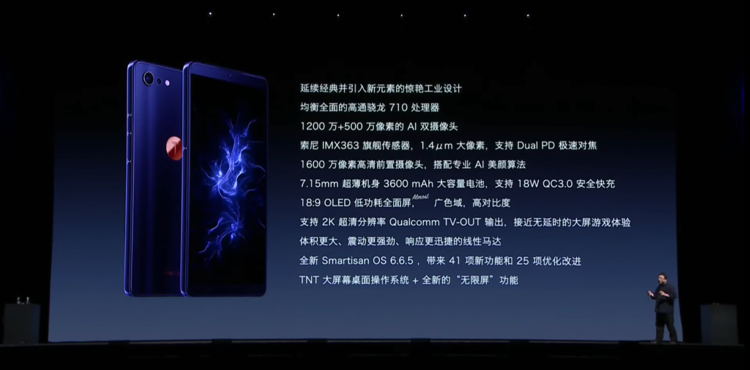
严格来讲这页幻灯片的设计不尽如人意，因为承载了太多的信息，造成阅读压力非常大。但考虑到它更多是为媒体准备的，媒体老师只要拍下这页幻灯片就能捕捉手机的全部特点，等于官方发布会「一图流」。想象一下如果这么多信息都使用较粗的衬线体，就会因字体太小导致字变成了轮廓不一的小白块儿，非常灾难。
最后，字体更换也有可能是出于品牌形象的考虑：第一，是为了统一网站、宣传材料、手机操作系统等所有地方的字体，也统一了幻灯片中的字体；第二，作为一家科技公司，即使是更有文艺气息的科技公司，使用较粗的衬线体会给人笨重，刻板，复古的感觉。而这些都是一家科技公司不想拥有的标签。
反过来，如果继续发掘罗永浩的演讲幻灯片你会发现 2013 年的发布会幻灯片中的字体，实际上继承了系列演讲《一个理想主义者的创业故事》幻灯片中的字体：
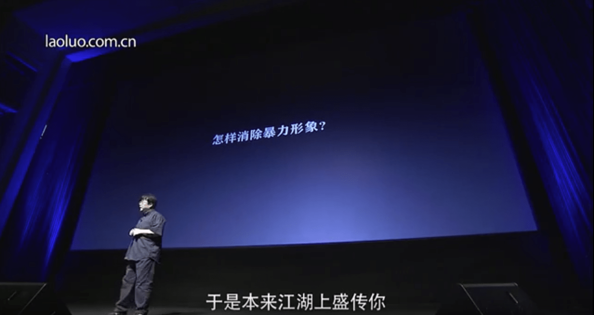
而那个时候的老罗演讲，场地比现在小，也不用列一屏幕的参数，最重要的是老罗代表的不是一个科技公司。所以在《一个理想主义者的创业故事》的语境下，较粗的衬线字体显得非常合理。如果用一个细细的非衬线体，反而显得轻浮。所以，没有「好不好」的字体，只有「对不对」的字体选择。
以上便是我们基于「区分字体」的知识，对「字体选择」做出的分析。相信你明白了学习「区分字体」的重要性，我们会在下一章详细展开来讲如何选择一款合适的字体。现在，让我们回到「字体区分」，用下面三组练习题检验一下我们的区分能力：
中文字体区分练习
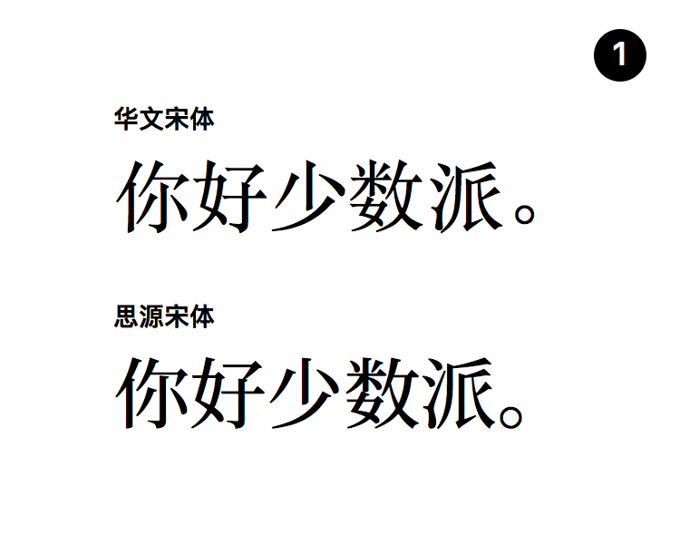
第一题，两款来自不同厂牌的宋体。
先从大体观察：对比「好」字的女字旁以及「数」的反文就可以看出思源宋体的内白更大，整体更丰满一些，华文宋体则更伶俐。另外华文宋体字面更窄，感觉更高挑。
细节观察：同是衬线字体，思源宋体的衬线更加尖锐，华文宋体的衬线更圆润。思源宋体的「你」字右半边的竖勾和上边的横折几乎接触了，小字体的时候可能会有粘在一起的感觉。
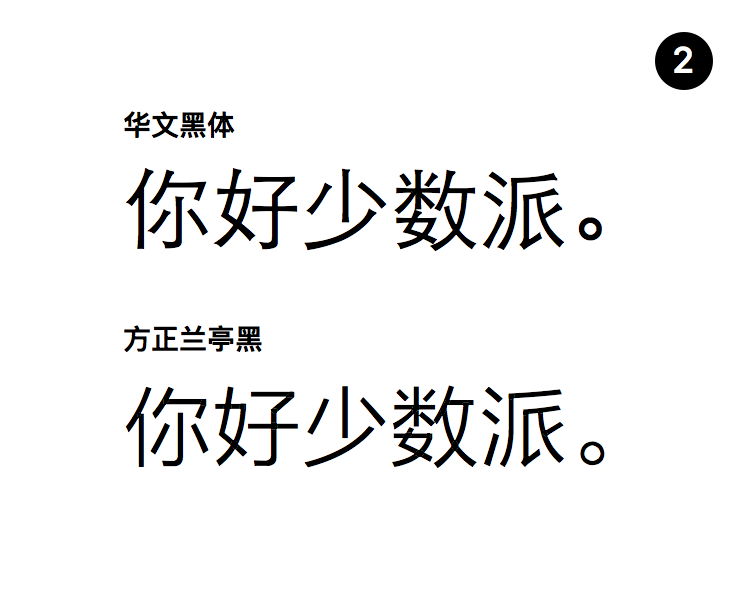
第二题，两款黑体。
最明显的差别是有无喇叭口，无喇叭口的方正兰亭黑看上去更现代一些，反之华文黑体更加稳重。
两款字体在内白的处理上差别不大，但方正兰亭黑的笔画更加偏向直线。比如「派」字右半边的第一笔撇，华文黑是明显有曲线的，而兰亭黑则向直线靠拢。
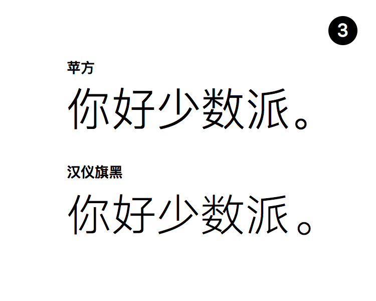
第三题，两款无喇叭口的黑体。
汉仪旗黑和上一题的方正兰亭黑都属于笔画近似于直线的风格。从「数」的反文旁可以看出来，旗黑的内白要比苹方大一些。此外旗黑「少」字的最后一长撇更加平行，有意给上半部分让出空间，字体整体重心相较苹方稍微低一些。
谁在做字体？
中文字体厂牌有著名的方正字库、华康字形、汉仪字库等，他们同时设计和拥有大量的正文字体和标题字体的版权，而且在命名一款字体的时候，经常会冠以厂牌名，比如「华文宋体」、「方正楷体」。国际大厂 Monotype 也设计了许多中文字体。除此之外还有类似造字工房、叶根友字体、喜鹊造字、3type 等比较专注标题字体的厂牌。来自台湾的 Justfont 则专注于制作中文网页字体。
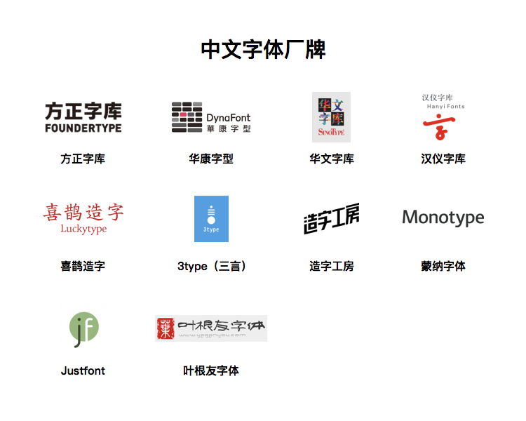
那么，我要去哪儿买字体呢？相比英文字体，中文字体并没有一个统一的平台，通常只是在字体厂牌的官网进行购买，而且几乎都是买断制，没有订阅制。你可以在以上这些厂牌的官网中购买字体的授权。
由于中文字体设计工作量非常庞大，所以独立设计师以及免费字体少之又少。但你会发现「字体下载网站」却有不少，你可以轻易地在上面下载到原本收费的字体。那么这种从字体下载网站上免费下载的字体可不可以使用呢？
我的答案是：无论是中文还是英文字体，一定要分清楚其授权的范围。对于付费字体，在没有购买授权的情况下用于任何用途都是不可取的；对于免费字体，也会分为「免费非商业授权」以及「免费商业授权」两种，一定要看好授权范围方可放心使用。话说回来，「字体下载网站」是一个灰色地带，它可以让设计师在不购买字体的情况下进行试用，在设计稿上用自己喜欢的字体以便需要时购买；同样也是一个陷阱，提供了使用未授权字体的可能。
更多关于如何获取免费字体以及少数派也有一篇文章，有关如何获取字体：《免费字体获取和使用指南》
推荐阅读
《中国字体设计人:一字一生》—廖洁连
相比上一期推荐的《西文字体》，这本书更加有文化积淀，通过采访十二位中文字体设计人，讲述了中文字体设计的产生和变迁，也反映了社会的变化。整本书虽然气氛悲观，但能从其中了解不少关于中文字体设计背后的艰辛以及与西文字体的不同之处。
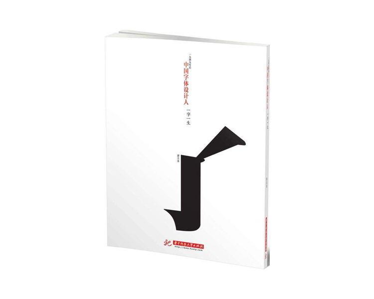
justfont blog
justfont blog 是之前提到的一家位于台湾的中文 Webfont 工作室。他们的博客有许多关于繁体中文字体设计的文章，文章内讨论的内容同样适用于简体中文的排版。justfont 的选题非常有趣，比如《筆畫都是選票：從字型設計看首長大選》、《颱風天，談一下颱字的設計》等等。
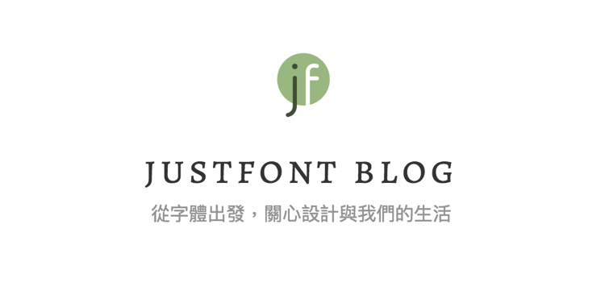
Type is Beautiful
Type is Beautiful 是一个中文字体设计博客，他们的文章能够帮助你很好地了解字体设计的基础、排版原理的基础以及一些历史背景，而且不失趣味性。他们出品的《字谈字畅》播客也非常值得一听。
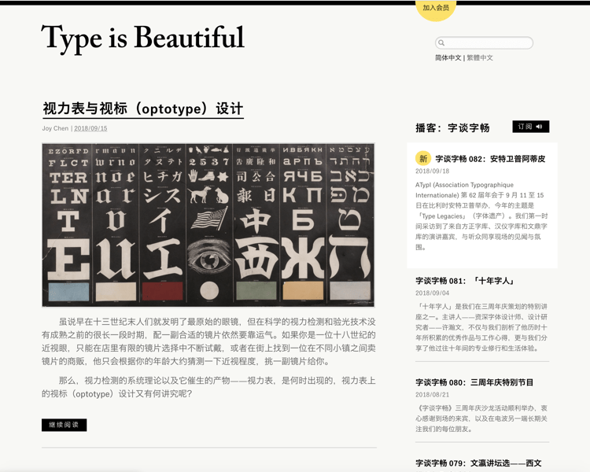
Adobe CJK Type Blog
Adobe 官方的 CJK（中文、日文、韩文）字体博客，包含文字编码，历史背景以及消息资讯等等。但博客的语言是英文。
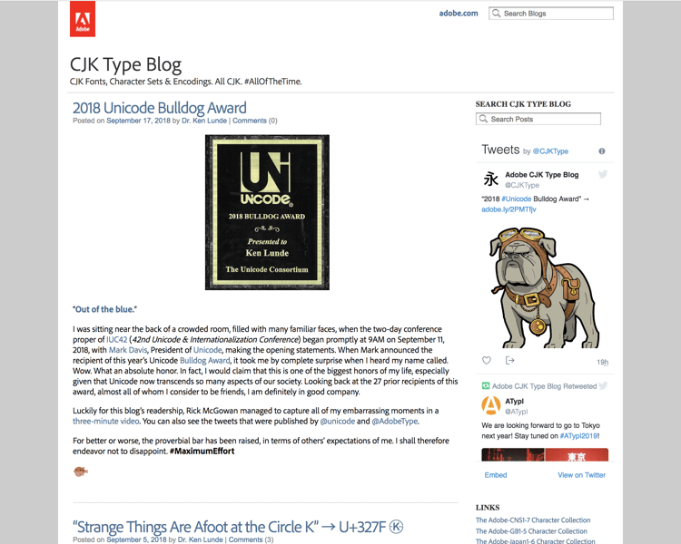
有了字体辨识能力之后，再经过一番自主训练就可以一眼分辨出眼前的字体是什么了。这种自主练习可以随时发生，无需刻意进行。可以是你在浏览网页的时看到的字体，家电上的字体，广告牌上的字体等等……留意身边的字体，全是练习题。
结语
本章，我们学习了辩识中文字体的一些特征，并且运用这些特征做了三道练习题，了解了中文字体品牌以及购买字体应该去哪里，最后推荐了一本关于中文字体设计师的书籍以及三个中文字体设计相关网站。
我们终于完成了中英文字体的基本知识学习，这些知识不是为了我们可以设计一款字体，而是去选择一款「正确的字体」。感谢你的阅读，我们下一章见。
上一期
下一期
精选评论（1） 我的评论